Docker + Kafka + Spark Structured Streaming + Delta Lake + MLflow + Regression Models
Bu dashboard, Spotify Tracks Dataset üzerinde kurulan uçtan uca büyük veri pipeline projesinin çıktılarını özetler. Veri Python Kafka Producer ile Kafka topic'ine gönderilmiş, Spark Structured Streaming ile işlenmiş, Delta Lake Bronze/Silver/Gold katmanlarına yazılmış ve popularity tahmini için regresyon modelleri eğitilmiştir.
Docker Kafka Spark Delta Lake MLflow Dashboard5 regresyon modeli RMSE, MAE ve R2 metrikleri ile karşılaştırılmıştır.
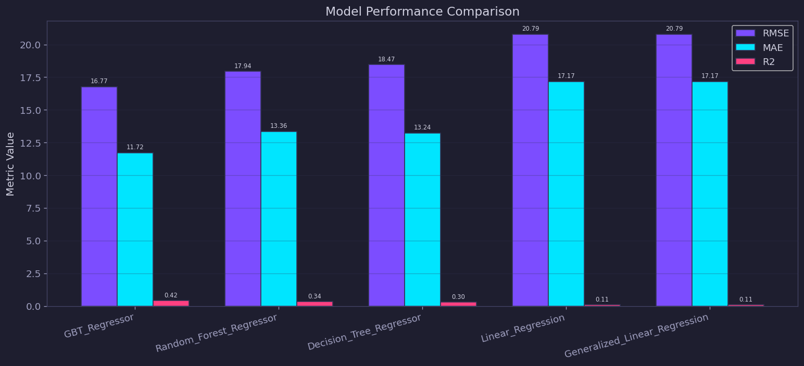
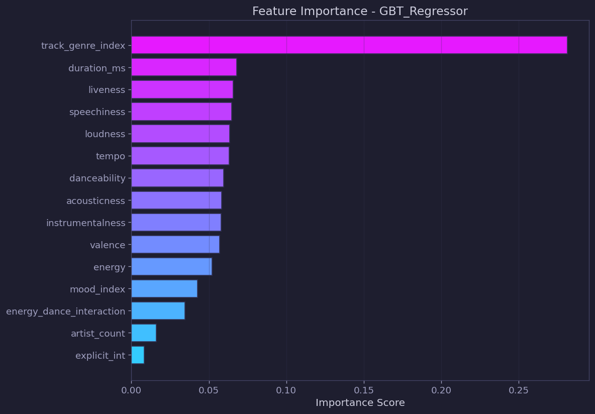
Gerçek değer - tahmin grafikleri ve residual dağılımları model performansını yorumlamak için kullanılmıştır.
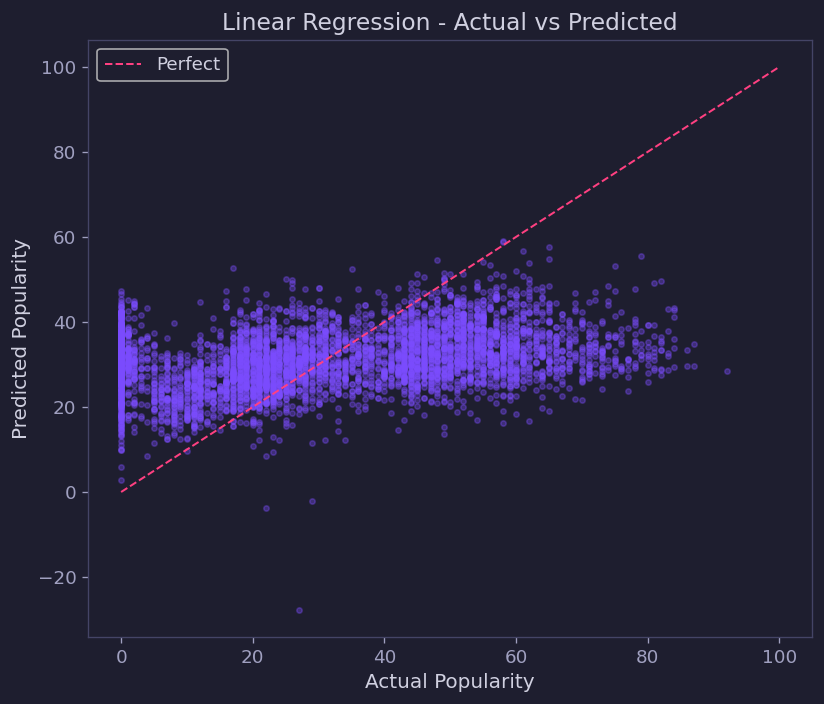
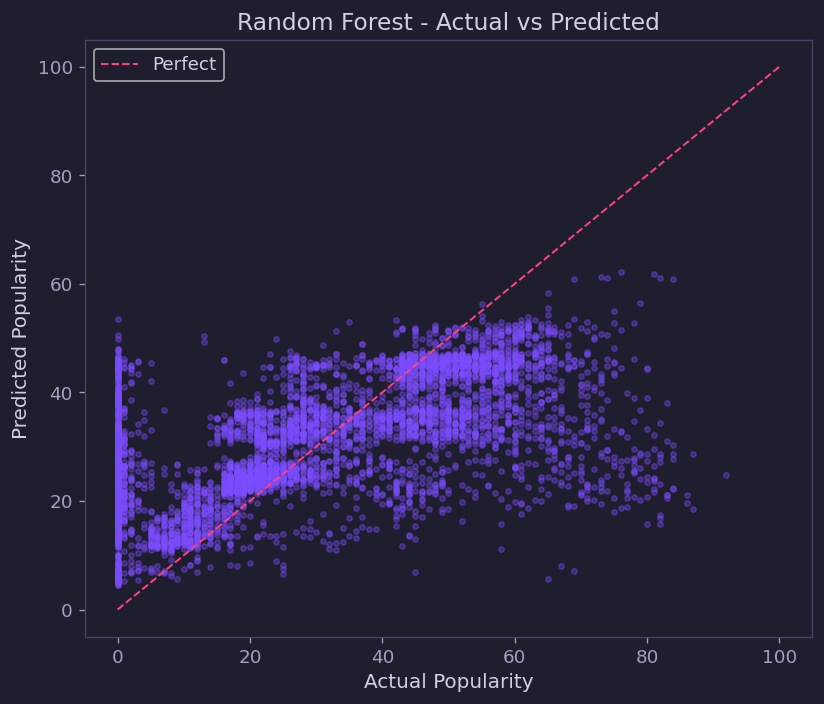
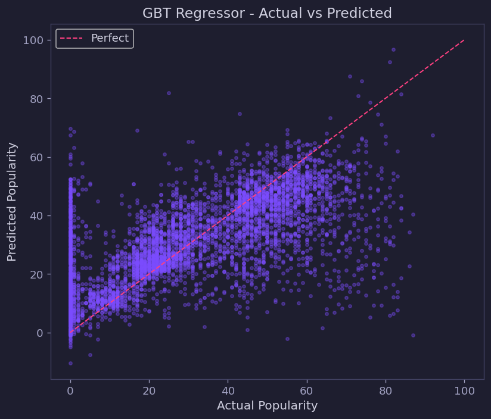
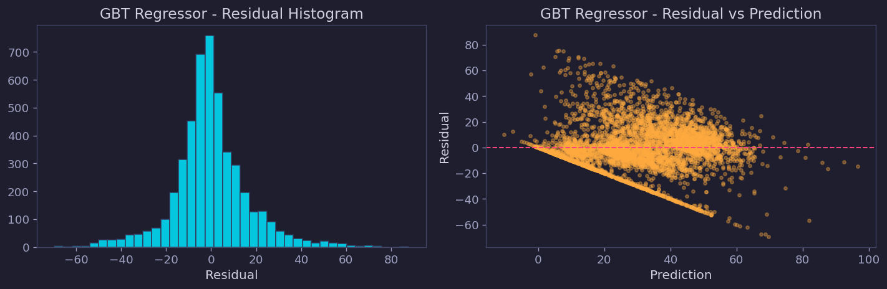
EDA aşamasında dağılım, eksik değer, korelasyon, tür analizi ve zaman serisi grafikleri üretilmiştir.
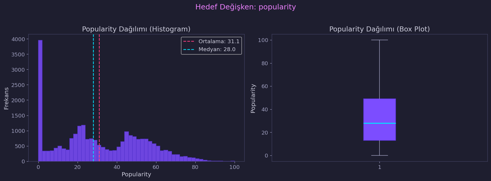
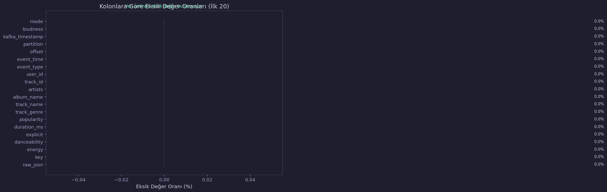
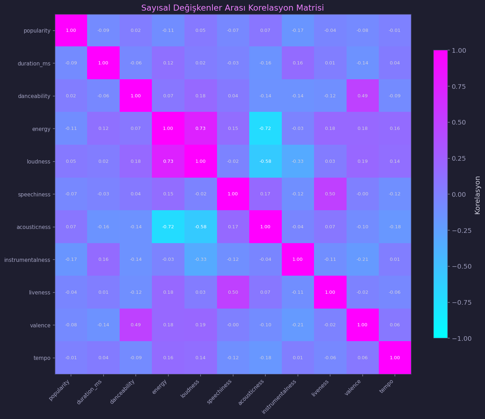
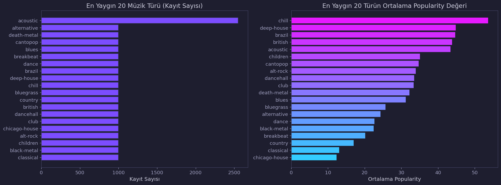
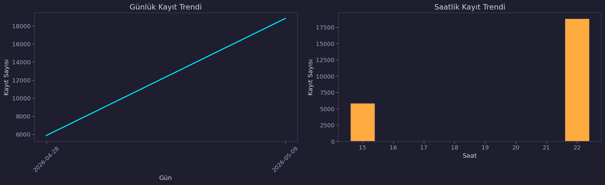
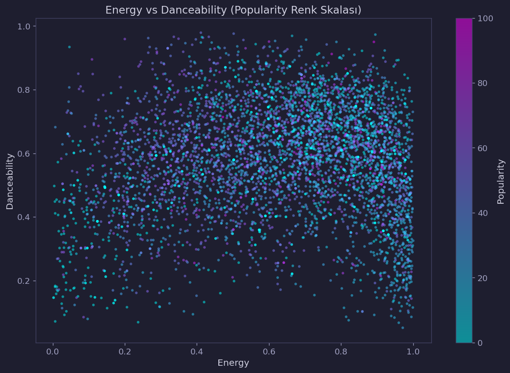
| Katman | Açıklama | Path |
|---|---|---|
| Bronze | Kafka'dan gelen ham JSON mesajları | delta/bronze/spotify_tracks |
| Silver | Parse edilmiş ve temizlenmiş veri | delta/silver/spotify_tracks |
| Gold Analytics | Analitik özetler | delta/gold/spotify_analytics |
| Gold Features | ML feature tablosu | delta/gold/spotify_tracks_features |